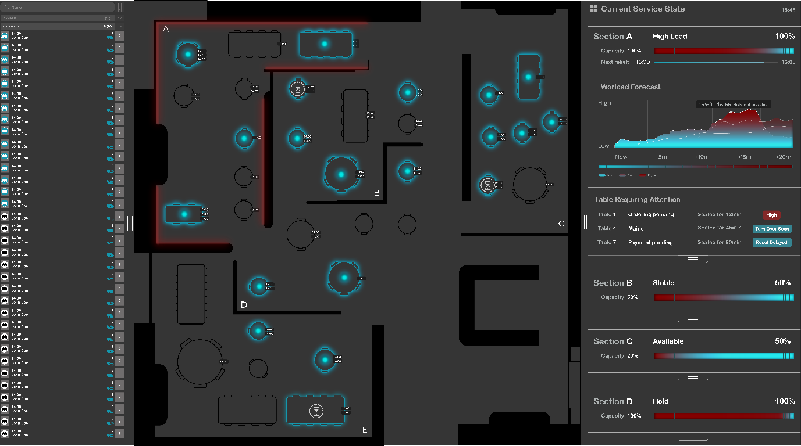
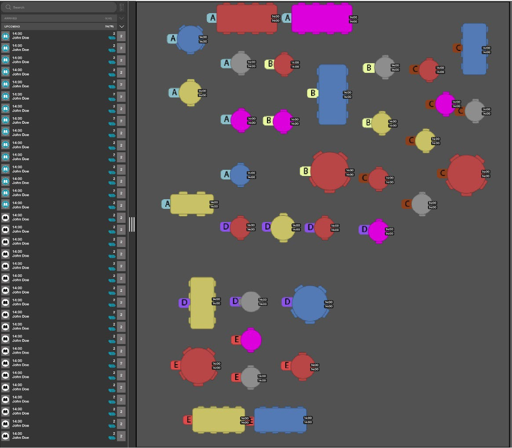
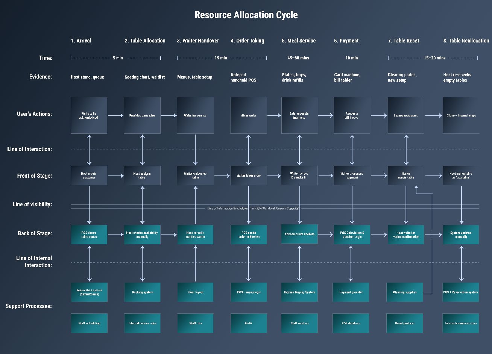
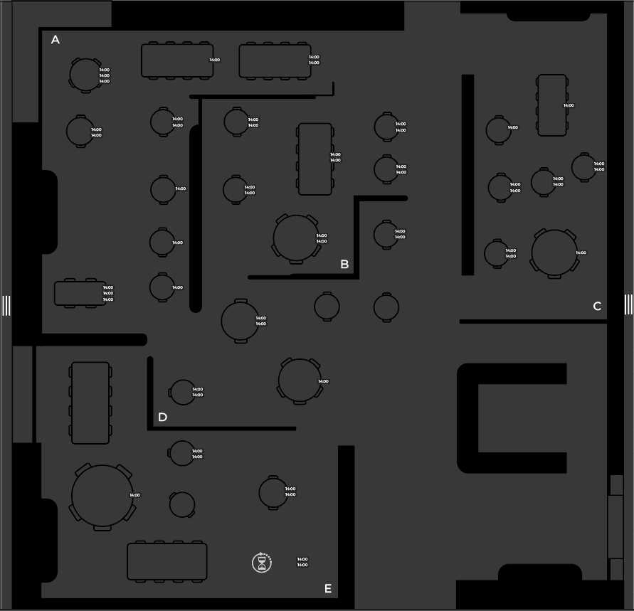
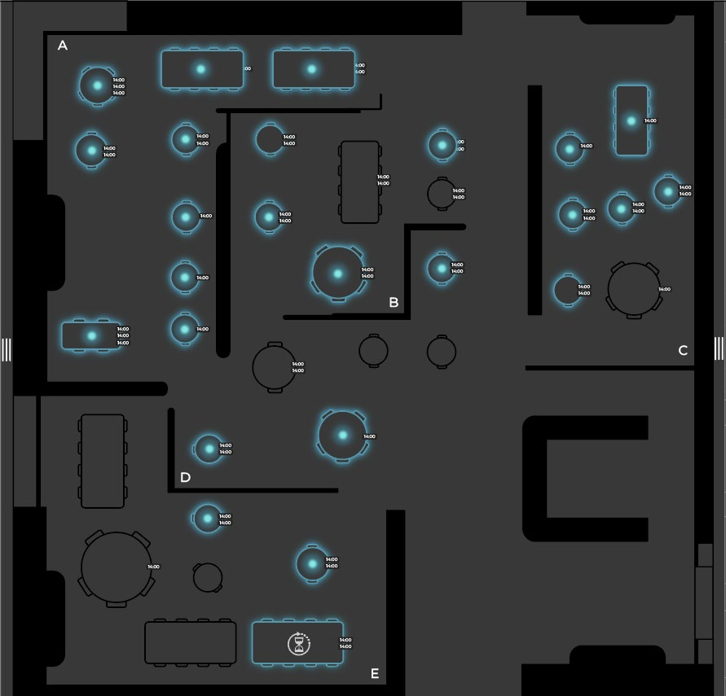
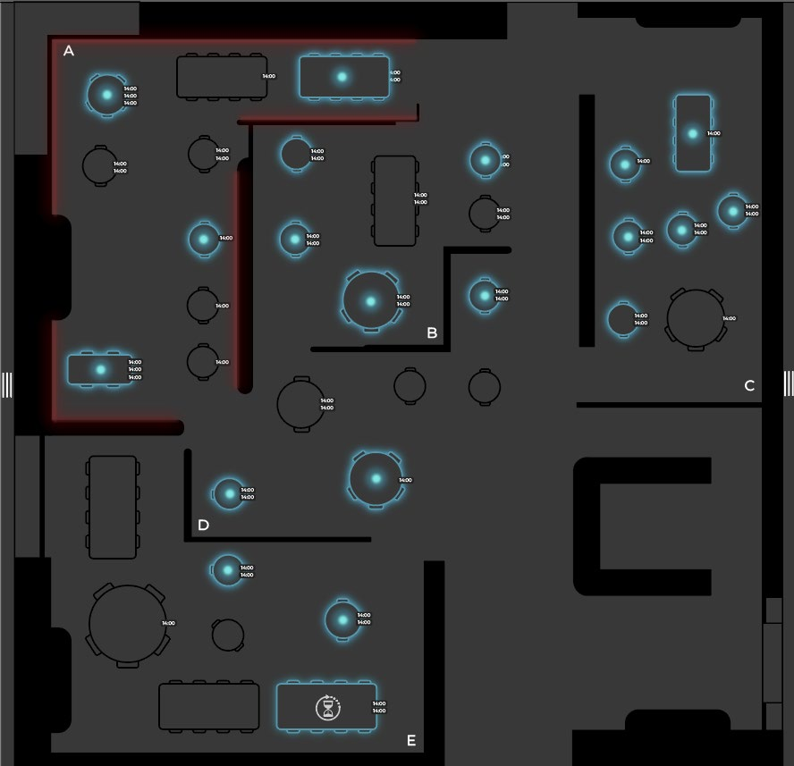
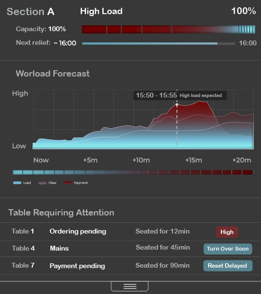

The redesigned interface — live floor view with blue occupancy glows and red workload signals.
Overview
A redesign of
SevenRooms
Most hospitality software tracks data but fails to support the lived reality of service pressure. This project redesigns the SevenRooms table management interface to shift focus from table status alone toward temporal workload and task convergence.
The project is situated at Petersham Nurseries, a high-end restaurant in Richmond with high walk-in traffic and limited floor visibility. Hosts make rapid decisions under pressure, but the existing system overwhelms them with colour-coded states that don't reflect actual workload.
Through situated observation and service blueprinting, a central insight emerged: workload is temporal, not spatial. Overload occurs when tasks converge, not when sections are full. The redesign makes this invisible workload visible.
The Problem
Data without
context

The existing SevenRooms interface — colour codes track dining stages but fail to signal human capacity.
The existing system relies on multiple colour-coded table states that require significant cognitive effort to interpret. During observation, hosts largely ignored these indicators once service began — they only needed to know if a table was occupied or available.
Critical finding
The system does not represent workload. It doesn't indicate whether seating a table now will create pressure later. Decisions are made based on availability rather than capacity.
Key Insight
Workload is temporal,
not spatial
Overload does not occur when sections are full. It occurs when tasks converge.
Seating three tables at the same time can generate more pressure than managing eight tables that are already eating. This type of workload is felt immediately by staff but remains invisible to the system supporting seating decisions.
Analysis
Blueprinting the
allocation cycle

Service blueprint identifying the gap between system tracking and host coordination needs.
A detailed service blueprint mapped the full table allocation cycle. It revealed that while certain stages are well supported digitally, moments of handover, order taking, and table reset are vulnerable to overload. Feedback from floor to host is slow or absent.
Design Direction
Perceptual clarity over
data density
Rather than adding new metrics, the design focuses on perceptual clarity. The system communicates pressure, timing, and consequence without requiring conscious interpretation — moving away from labels and alerts toward visual cues understood immediately.
Spatial Foundation
Breaking down
the floorplan

Structural layout — sections are spatially delimited without colour coding.
The dining space is divided into five clearly defined sections. These are not colour coded — section identity is communicated through form and labelling alone, allowing workload signals to carry meaning without competition.
Table Level
Binary clarity:
occupied or available

Binary occupancy layer — blue glow indicates occupied tables, and nothing more.
A consistent blue glow indicates occupancy. No urgency, no task state — just a simple answer to "is this table occupied?" This reduction dramatically lowers cognitive load during busy service.
Section Level
Red glow:
pressure, not occupancy

Section-level workload — red glow indicates task convergence, not table occupancy.
A red glow signals high workload from task convergence — multiple orders pending, overlapping payments, or simultaneous seating. Even with few tables, effort can be high. This shifts decision-making from "where is there space?" to "where can effort be absorbed?"
Forecasting
Short-term projection
15–20 minutes ahead

Workload forecast — anticipating pressure before it arrives.
The right-hand panel visualises how workload will evolve over the next 15–20 minutes. Not a precise prediction, but a directional guide — helping hosts anticipate where decisions made now will have consequences shortly.
Design Decisions
Support,
not automation
The design deliberately avoids automation, alerts, and numerical data on the main interface. Hospitality relies on human judgement — the system should support awareness, not replace it.
What changed
From colour-coded table states → binary occupancy
From static data → temporal workload signals
From reactive alerts → anticipatory cues
From control panel → awareness tool
Conclusion
Supporting people,
not just processes
By reframing table allocation as a temporal problem rather than a spatial one, the design aligns with the realities of hospitality work.
The system makes invisible workload visible — supporting hosts to make more informed, grounded decisions during live service. It demonstrates that service systems should support the people who operate them, not just the processes they manage.